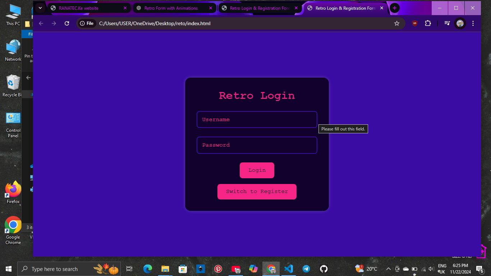

Retro Login & Registration Form
Project Overview
The Retro Login & Registration Form project is a creative experiment inspired by '80s neon aesthetics. It combines smooth animations, responsive design, and a toggle feature for a seamless user experience. This project demonstrates a blend of frontend design and JavaScript functionality.
.png)
Design Process
The design process began with a desire to create a form that stood out visually. Using vibrant purples and pinks, I aimed to capture the retro aesthetic while maintaining usability. Key decisions included:
- Implementing a toggle for switching between login and registration modes.
- Adding smooth animations for input fields and buttons.
- Ensuring a responsive layout that adapts to all screen sizes.
Tools used included HTML, CSS, and JavaScript, along with creative inspiration from neon art and gaming interfaces.
Challenges Faced
Every project comes with its set of challenges. For this form, the main hurdles included:
- Creating a dynamic form toggle without breaking responsiveness.
- Choosing colors that balanced retro vibes with accessibility.
- Ensuring animations felt smooth and didn't affect performance.
Through testing and iterations, these challenges were overcome, leading to a final product I’m proud to showcase.
Key Benefits
This project helped sharpen my skills in:
- Using animations to enhance user experience.
- Building interactive components with JavaScript.
- Understanding how to design for both aesthetics and usability.
The Code
Below is a snippet of the code used to create the toggle functionality:
let isLogin = true;
function toggleForm() {
const title = document.getElementById("form-title");
const emailGroup = document.getElementById("email-group");
if (isLogin) {
title.textContent = "Retro Register";
emailGroup.classList.remove("hidden");
} else {
title.textContent = "Retro Login";
emailGroup.classList.add("hidden");
}
isLogin = !isLogin;
}